Create and Manage Business Reports
Learn how to generate and manage Business reports for ACH, User, or Balance activity.
1
Click "Business Banking"
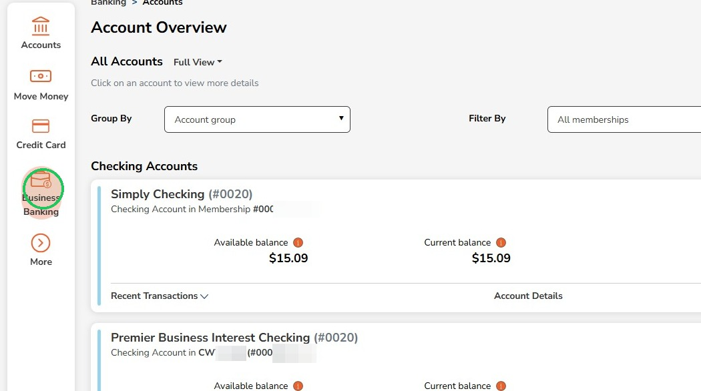
2
Click "Reports"
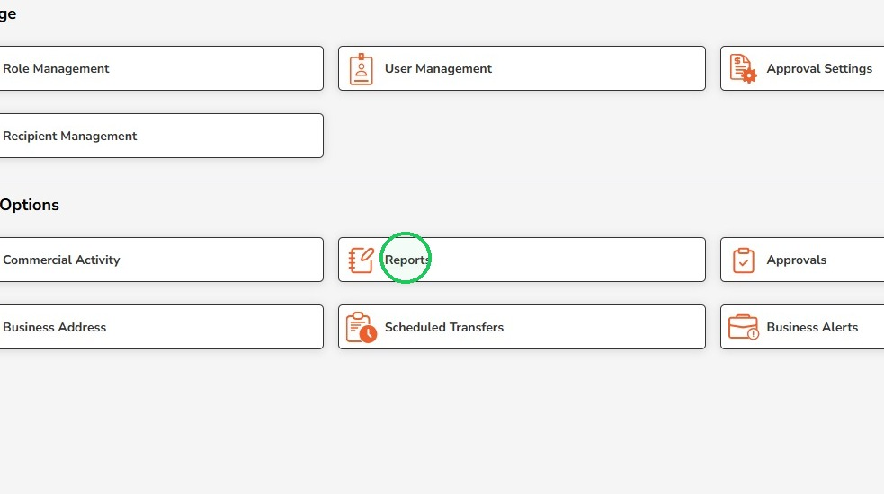
3
You can filter already generated reports by business, name, report type and start/end date
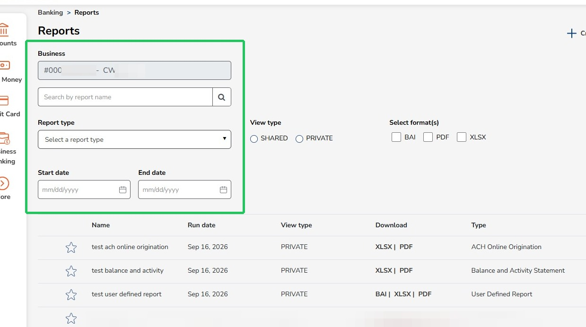
4
You can also filter by view type and report format
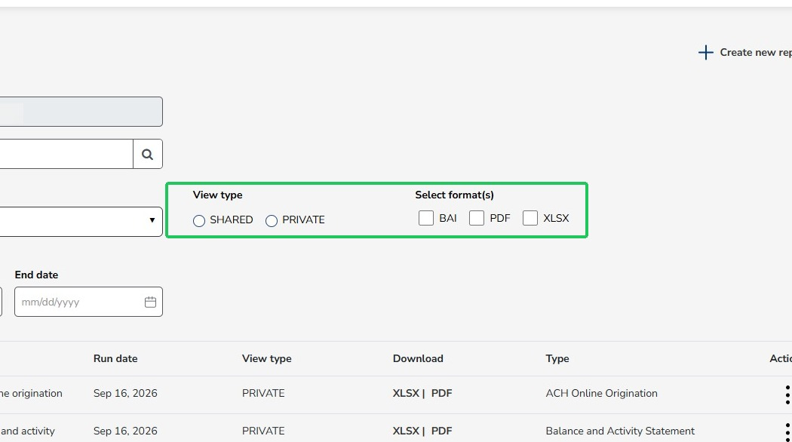
5
Click the three dots next to a report to get additional options
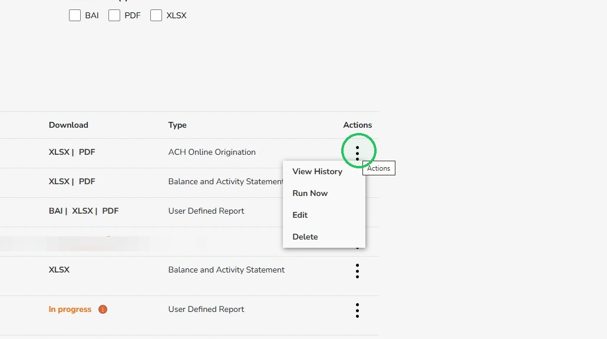
6
You can download the reports in different formats
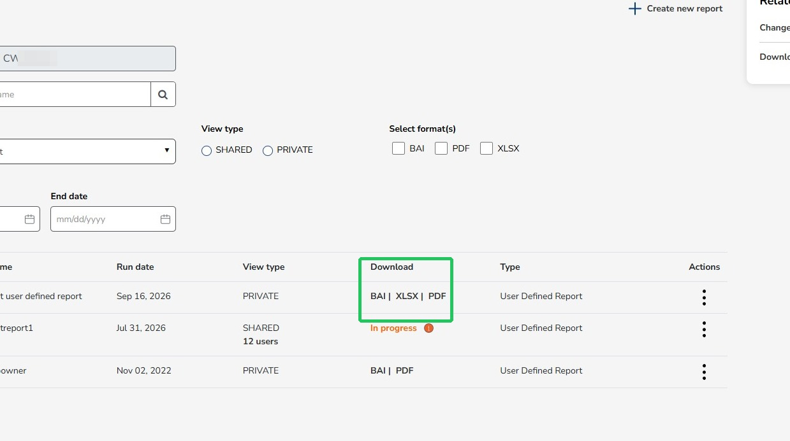
7
To create a new report, click "Create new report"
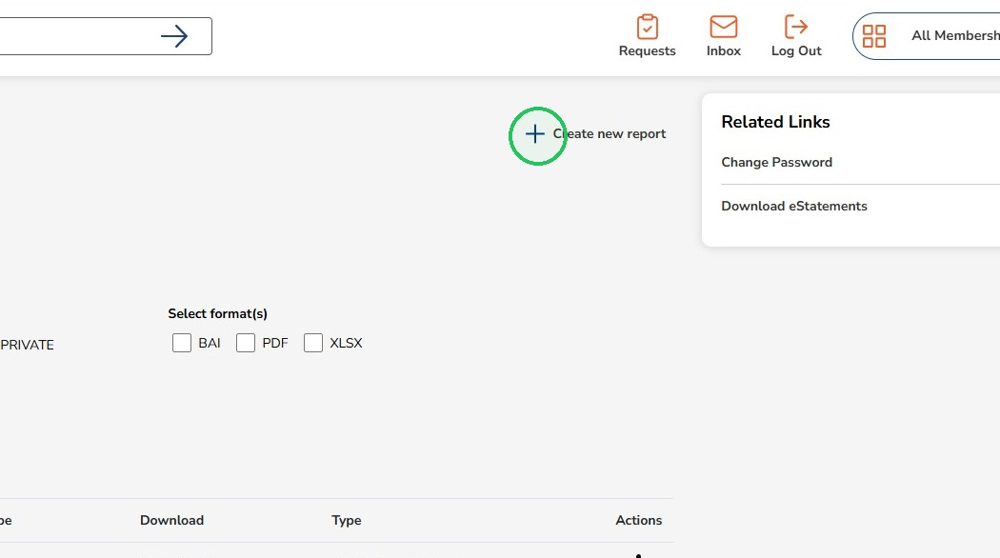
8
Click the Report type dropdown
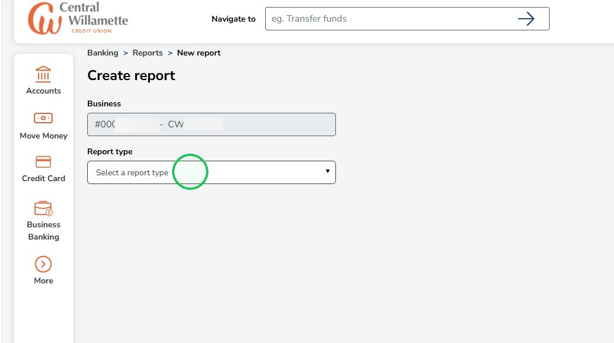
9
Select which report you are creating
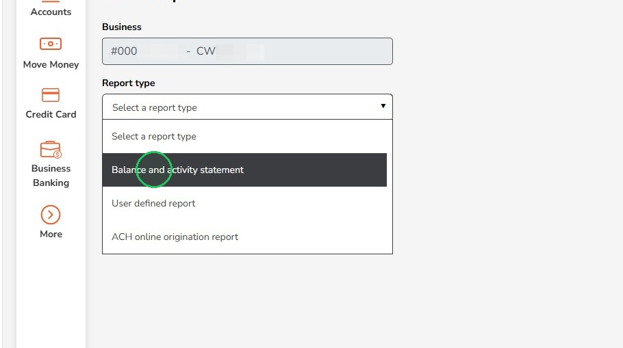
10
Enter a Report name
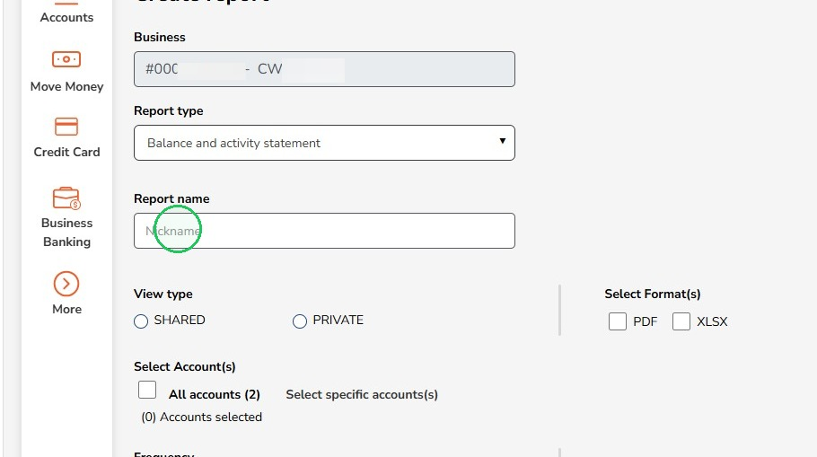
11
Select whether you want the report shared with other users, or private to your user
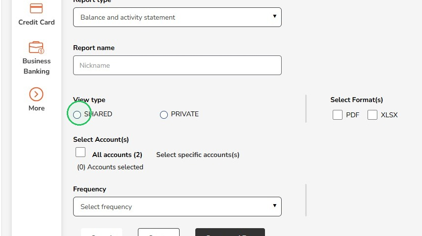
12
Select to share the report with all users or select specific users
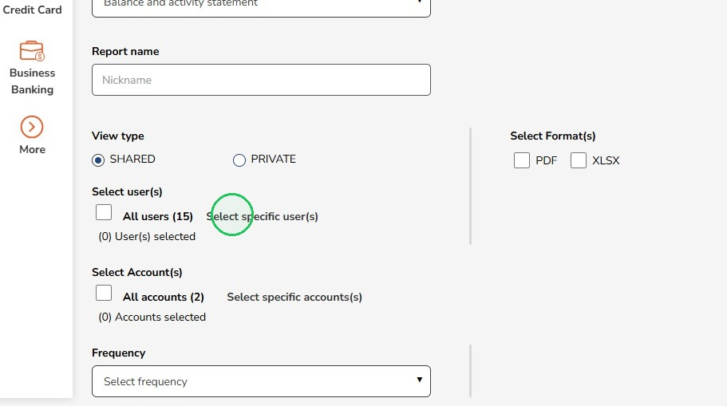
13
Select whether the report is for all accounts or select specific accounts
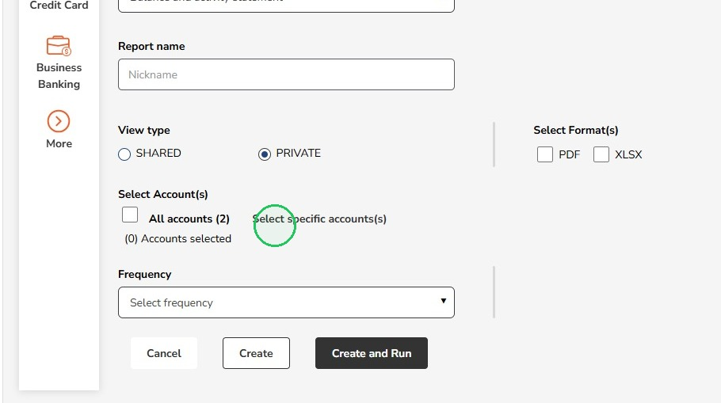
14
Select the format for the report
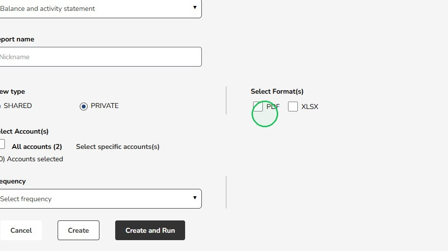
15
Select the frequency of the report
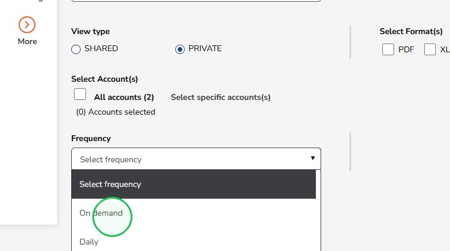
16
Select to create the report to run later, or select create and run to run the report now
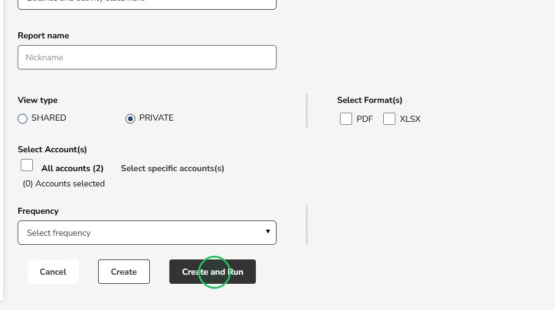